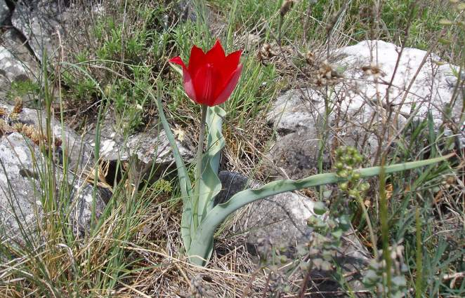
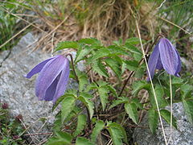

Еделвайс

Еделвайс (Leontopodium, на немски: Edel - благороден, Weiss - бял, Лъвска лапа) е род многогодишни тревисти растения от семейство Сложноцветни. Над 30 вида защитени високопланински растения. Срещат се в Европа и Югозападна Азия. В България се срещат Leontopodium alpinum subsp.alpinum- Пирин и Leontopodium alpinum subsp.nivalis в Стара планина. Изображението на растението е емблема на Българския туристически съюз (БТС). Стъблото на цветето е високо до 20 cm, туфесто и покрито с власинки. Листата са силно стеснени, прикрепени са към стъблото без дръжки и са покрити с бели копринени власинки. Долните листа са по-големи, а нагоре постепенно намаляват.
Еделвайсът расте по недостижими места във високопланинските райони. По света има повече от двадесет вида еделвайс,като в Европа се срещат само два. Най-редките видове по света са от Еверест и от Хималаите. Изложен е на силно прегряване от слънчевите лъчи. Власинковите клетки задържат въздух, наситен с водни пари и така се намалява изпарението от листата. От другата страна, власинковата покривка действа като "слънчобран" - намалява поглъщането на слънчевата топлина.
Пролетно котенце
Морфология и биология. Многогодишно тревисто растение. Коренището вертикално, на върха с няколко яйцевидноелиптични ципести листа, от които излизат стъблото и приосновната листна розетка. Стъблото високо 5–30 cm, прилегналовлакнесто. Приосновните листа презимуващи, простоперести; листните дялове обратнояйцевидни, до ½ наделени на 2–3 къси, широко триъгълни зъбчета . Стъбловите листа прилегналовлакнести, с линейни дялове. Цветовете 4–6 cm в диаметър, слабо наведени или изправени. Околоцветните листчета обратнояйцевидни, външните в основата си розови, виолетови или сини, копринестовлакнести; вътрешните белезникави. Плодовете орехчета, дълги 2,5–3 mm, призматични, късовлакнести, стълбчетата запазващи се при плода, дълги 15–22 mm. Цв. VІ–VІІ, пл. VІІ–VІІІ.
Местообитания и популации. По каменисти и тревисти места в субалпийския и алпийския пояс. Участва в състава на тревните съобщества от гъжва, извита острица и др. Популациите са с мозаечно разпространение на индивидите и разпокъсани.
Разпространение в България. Рила (Седемте езера, вр. Близнаците, Урдина река, вр. Шатър, Ръждавица, вр. Мраморец и др.); от 2200 до 2700 m н. в.
Родопско лале

Родопско лале е многогодишен растителен вид от род Лалета, български ендемит, защитен от Закона за биологичното разнообразие и включен в Червената книга на Република България. Открито е от чешкият ботаник Йосиф Веленовски през 1899 година при екскурзия из Родопите.Видът има едра яйцевидна луковица, покрита с черно-кафяви ципести люспи. Стъбло е голо и изправено високо от 20 до 45 см. Листата са 3-4 линейно ланцетни с вълнообразно нагънатите краища. Цъфтят от края на април и целия юни. Околоцветните листчета са 6 еднакви по големина, тъмночервени с восъчен налеп отвън. В основата отвътре са с черно петно с жълт кант. Тичинковите дръжки са голи, а прашниците почти черни.
Давидов мразовец

. Многогодишно луковично тревисто растение. Луковицата e яйцевидноелиптична, дълга около 2 cm и широка 1,5 cm, с червеникаво-кафеникава ципеста обвивка. Листата 2–3, линейноланцетни до ланцетни, дълги 10–20 cm и широки 0,8–1,6 cm. Цветовете 1–2(3), светлорозови; околоцветните листчета ланцетни, 2,5 cm дълги и 0,4–0,6 cm широки, външните снабдени в основата си с 2 ушички, дълги около 3 mm. Плодът яйцевидна кутийка, с късо носче. Цв. II–IV, пл. IV–V.
Расте по сухи и каменисти места, върху варовиков субстрат, сред храсталаци, в пояса на ксеротермните дъбови гори. Популациите са малочислени и с мозаечно разпределение на индивидите.
Североизточна България (Шумен, Търговище), Стара планина (Изт. – Сливен); до 1000 m н. в.
Отрицателно действащи фактори. Унищожаване на характерните местообитания, утъпкване на индивидите и на местообитанията от преминаващи животни. Привързаност на вида към специфичен хабитат и ниски миграционни възможности, рядък и силно разпокъсан хабитат.
Предприети мерки за защита. Защитен вид съгласно Закона за биологичното разнообразие. Включен е в списъка на застрашените растения на IUCN от 1997 г. с категория „уязвим“.
Проучване на биологията и екологията на вида, застрашаващите фактори и пътищата за ограничаване на тяхното отрицателно въздействие. Изготвяне на План за действие за опазване на вида, включване на характерните за вида хабитати в Европейската екологичнаа мрежа НАТУРА 2000. Мониторинг на състоянието на популациите и събиране на семенен материал за Националната семенна генбанка в гр. Садово.
Алпийска повет

Алпийски повет (Clematis alpina) е вид покритосеменни растения. Те представляват храсти с тънки вдървенели, катерещи се стъбла, които се прикрепят с увиващите се дръжки на перестите листа. Цветовете са едри, единични, сини. Расте по скалисти и каменисти места до надморска височина 2 000 m. Среща се на Витоша в района на Комините и Резньовете. Много рядък вид.